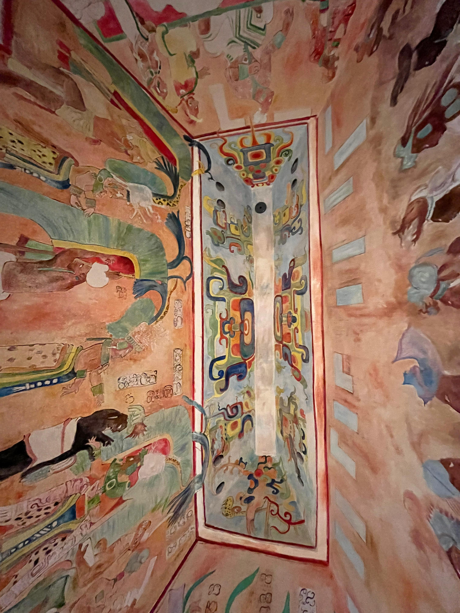
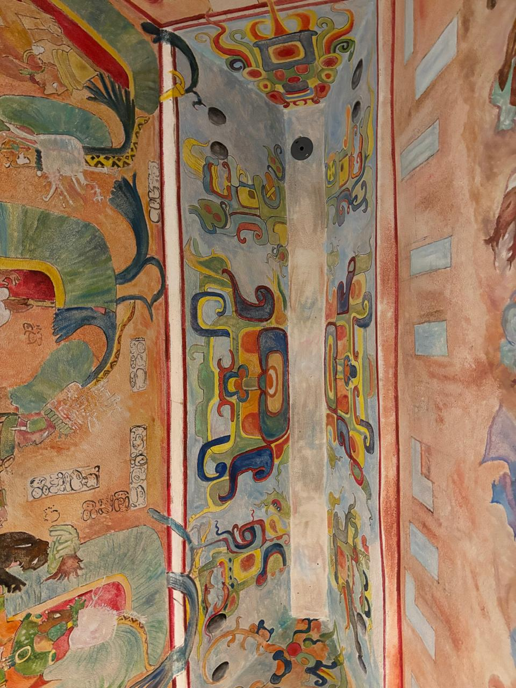
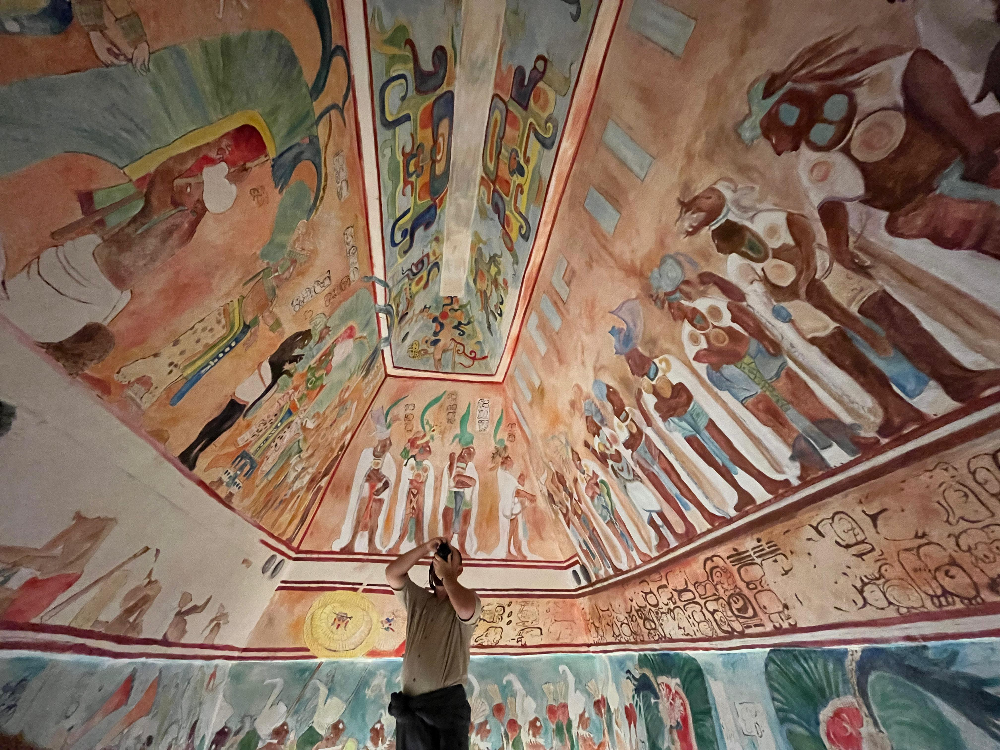

Mural de Bonampak
✦ . ⁺ . ✦ . ⁺ . ✦
Los murales de Bonampak son una serie de extensas pinturas murales mayas consideradas una de las obras pictóricas más
representativas y las mejor conservadas pertenecientes a la cultura maya, plasmadas en las paredes del Templo de los
Murales en la Estructura I de Bonampak (muros teñidos en maya), una antigua ciudad maya y actual zona arqueológica
localizada en la Selva Lacandona en el estado de Chiapas, México. La calidad y buen estado de las pinturas murales
al momento de su hallazgo permitió que se realizaran estudios e interpretaciones muy completas sobre las pinturas
mediante las cuales se pudieron conocer muchos aspectos rituales, bélicos y culturales sobre la vida de la civilización
maya prehispánica, además, sirvieron de referencia sobre cómo pudieron haber sido las pinturas en muchos otros de los
sitios mayas.
Su descubrimiento
✦ . ⁺ . ✦ . ⁺ . ✦
El encuentro de los murales fue conjunto al del sitio arqueológico, se dice que fue en 1946 cuando el estadounidense
Giles Healey guiado a la zona por Chan Bor (hombre lacandón), descubrió la zona de Bonampak en 1946. Sin embargo, los
habitantes locales lacandones ya conocían las ruinas mayas. Bonampak fue el primer gran hallazgo después de la Segunda
Guerra Mundial en Chiapas, México. Aquel descubrimiento, más que ser un primer encuentro con la zona, fue una muestra de
la atención que se empezó a dar a la cultura maya.
Los murales
✦ . ⁺ . ✦ . ⁺ . ✦
Los murales de Bonampak se encuentran en el Templo de las Pinturas, conformado por tres cuartos, cada uno con escenas diferentes.
Estas obras murales fueron dirigidas por el pintor maya Ocho-zarigüeya, quien gracias a la labor que le asignó el gobernante,
nos dejó de manera artística una perspectiva sobre su civilización.
La relevancia de estos murales prehispánicos se debe a que, mediante su interpretación, se ha logrado conocer muchos aspectos sobre
la cultura e historia de los antiguos residentes de Bonampak.


